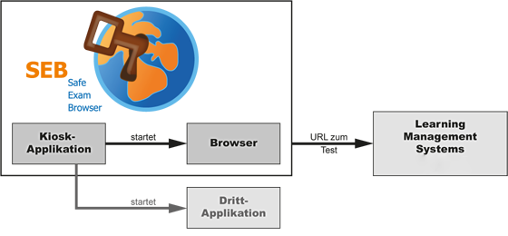

Safe Exam Browser (SEB) ist eine abgesicherte Browser-Applikation, um Online-Prüfungen auf Learning Management Systemen (LMS) zuverlässig durchführen zu können. Durch den Start der SEB-Applikation wird ein herkömmlicher Windows- oder Mac OS X Computer in einen sogenannten Kioskmodus versetzt und somit zu einer temporär abgesicherten Arbeitsstation. SEB regelt den Zugriff auf Hilfsmittel wie Systemfunktionen, andere Websites und Programme und unterbindet die Verwendung von unerlaubten Ressourcen während einer Prüfung.
SEB läuft lokal auf einem Computer und ist über das Internet mit einem Learning Management System verbunden. Generell läuft SEB mit jedem Web-basierten LMS und anderen Web-basierten Prüfungssystemen. Momentan bieten die beiden weitverbreiteten Learning Management Systeme Moodle und ILIAS einen ausdrücklich mit SEB kompatiblen Prüfungsmodus.
SEB besteht aus einer Kiosk-Applikation und einer Browser-Komponente, die auf einem Prüfungs-Rechner ausgeführt werden. Die Kiosk-Applikation ist für die Absicherung des Prüfungs-PC verantwortlich, wogegen die Browser-Komponente die Kommunikation über das Internet (oder internes LAN) mit dem Quiz-Teil eines LMS auf einem Server übernimmt.
Schematische Darstellung einer Online-Prüfung mit Safe Exam Browser und einem LMS, beispielsweise ILIAS oder Moodle. Zusätzlich kann eine parallel laufende Drittapplikation zugelassen werden, z.B. Excel oder R
Die obenstehende Abbildung zeigt die beiden internen Komponenten, aus denen SEB besteht, die Kiosk-Anwendung und den Browser-Teil. Der dritte Bestandteil einer SEB-Prüfungsumgebung ist in den unterstützten LMS integriert. Optional sind auch eine oder mehrere Drittapplikationen möglich
Safe Exam Browser für Windows besteht aus der SEB-Kiosk-Anwendung, die einen eigenen Windows-Desktop öffnet und Systembefehle wie Tastenkombinationen (zum Beispiel ALT+F4) und Klicks auf die rechte Maustaste abfängt. Der zweite Teil ist XULRunner, eine Laufzeitumgebung der Mozilla Foundation (Firefox Version 3 und neuer basieren ebenfalls auf XULRunner). Der SEB Browser-Teil, der auf XULRunner läuft, enthält keine Navigationselemente und Adress- und Statusleisten.
Im Gegensatz zur Windows-Version besteht Safe Exam Browser für Mac OS X aus einer monolithischen Applikation, die API-Funktionen eines Webbrowser-Frameworks aufruft, anstatt einen portablen Browser oder eine Browser-Laufzeitumgebung als separaten Prozess einzubinden. SEB für macOS benutzt das WebKit-Browsersystem, das auch von Safari, Apple Mail und diversen neuen Open-Source Browsern eingesetzt wird. SEB für macOS verbindet sich auf dieselbe Weise mit den Learning Management Systemen wie die Windows-Version.
Safe Exam Browser 2.0 ermöglicht sichere Prüfungen auf nicht von der Hochschule verwalteten, privaten studentischen Rechnern und erleichtert die Konfiguration auch in zentral verwalteten Prüfungsumgebungen auf beiden Platformen Windows und macOS. Mit SEB 2.0 wird eine individuelle Konfiguration pro Prüfung auf einfache Weise möglich, die mit starker Verschlüsselung vor Manipulationen gesichert ist. Dank einer neuen Authentifizierungsmethode ist es möglich, in Prüfungssystemen sicherzustellen, dass nur bestimmte, unveränderte SEB-Versionen mit den korrekten Sicherheitseinstellungen für die Prüfung verwendet werden. Dies ermöglicht sicheres Prüfen insbesondere auch auf nicht von der Hochschule verwalteten, privaten studentischen Rechnern.
Safe Exam Browser 2.0 ist eine vereinheitlichte Version, welche dieselben Funktionen, Schnittstellen für Prüfungssysteme, Konfigurationsdateien und eine sehr ähnliche Benutzeroberfläche auf beiden unterstützten Plattformen zur Verfügung stellt. Dabei werden aber weiterhin Eigenheiten der Betriebssysteme und spezifische Funktionalitäten der Plattformen berücksichtigt. Neben den mit allen Funktionen ausgestatteten Versionen für Windows und Mac OS X arbeiten wir ausserdem an einer Version für das iPad mit reduziertem Funktionsumfang, die aber trotzdem kompatibel mit dem vereinheitlichen .seb Konfigurationsformat sein wird.
Dieses Projekt wurde teilweise im Rahmen der von SWITCH geleiteten Programms "AAA/SWITCH – e-Infrastructure für e-Science" und des durch SWITCH koordinierten Kooperationsprojektes "Learning Infrastructure" (Teil des CRUS-Programms "Wissenschaftliche Information: Zugang, Verarbeitung und Speicherung") durchgeführt und erhielt finanzielle Unterstützung durch den ETH-Rat.